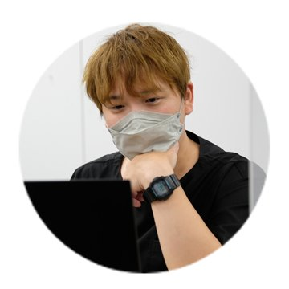

制作した動画
カードを押すとYouTubeが開きます。
起業家・スタートアップ向けの資金調達のチャンネル
SES・エンジニアのキャリアのチャンネル
エンジニアの働き方を伝えるチャンネル
タレント藤崎奈々子さんの公式チャンネル
旅・美容など女性向けのライフスタイル。テロップと構成の雛形づくりから担当し、いまも同じ雛形で続いています
男性向けの垢抜け企画のチャンネル
株式会社FANY様。芸人さんの垢抜けをテーマにしたバラエティ
【結婚×学歴】婚活市場で学歴はどこまで通用するのか
連盟のデータから、結婚相談所で成婚できない人の共通点
立ち上げ・運用から担当（開始4か月で月10件以上の成約）
【習慣と環境】トップセールスに共通する特徴
2人分の荷物を1人で検証してみました
求人のためのチャンネル。立ち上げ・運用から担当（開始1か月で採用に成功）
スプレッドシートとBigQuery連携の神機能「コネクテッドシート」とは？
令和5年 司法試験合格発表
インタビュー番組「今、生きてます。」
新宿で出会った人に「今、何を抱えて生きていますか」を聞く番組。チャンネルの立ち上げから企画・編集・サムネイルまで自社で制作しています（10回分を制作、順に公開予定）
前職（エンジニアスクール）で作った動画
未経験転職で面接前にやるべき4つの対策
目的：スクールの認知と成約。経験者に対談形式で話してもらう企画
【コース紹介】Webエンジニア 就職達成プログラム
目的：成約の増加。30代を中心に、年齢で迷う方へ向けた説明動画
Python認定基礎試験 徹底解説（配信イベント）
目的：自社教材の認知と購入。合格者に勉強法を語ってもらう配信
両隣の人の会話が入れ替わったら、ジョイマン高木はどんな反応をするのか？
タレントのお二人にドッキリを仕掛ける検証企画
芸人じゃない2人が、キングオブコント1回戦を突破するまで
吉本クリエイティブアカデミー（YCA）の同期コンビ「キノトビ」の初挑戦に密着。「なぜプロではない2人が突破できたのか」を軸に構成
「提案クラシックス」ライブ公演のオープニングVTR
運用実績の一例
チャンネルの立ち上げから運用・制作まで担当した例です。
独立してからの実績（株式会社クリファ）
前職での実績（チャンネル名は伏せています）
メンズクリニックのチャンネル
エンジニア採用のチャンネル
起業家向け・資金調達のチャンネル
※数字は担当していた当時のものです。集客や採用の結果は、商品やサービス、運用の条件によって変わります。
私の強み
40社以上の企業チャンネルを運用してきた経験
前職のYouTube運用代行の会社で、40社以上の企業チャンネルを運用してきました。成功した例と、うまくいかなかった例の両方がケースごとにたまっています。
- メンズクリニック・デンタルクリニック
- 学習塾・SES企業・エンジニア採用
- 声優・VC・結婚相談所 など
成約までを考えた導線の設計
事業会社でWeb担当を3年していた経験から、再生数だけでなく「問い合わせ・来店・採用」につながるチャンネル設計を考えます。
- YouTubeからサイトへの誘導と施策のご提案
- アンケートやGoogleアナリティクスでの効果測定と分析
運用の目線を持った編集
運用と制作の両方を担当してきたので、編集を担当するときも、チャンネル全体の狙いに合っているかを考えながら作ります。サムネイルや月1回の振り返りまで対応できます。
できること
企画・構成
チャンネルの目的とターゲットから企画を立て、台本と構成を作ります。出演者との打ち合わせや、当日の進行まで担当します。
撮影
いまはiPhone 16 Proとジンバルでの撮影がメインです。機動力のあるロケやVlog風の撮影に向いています。じっくり撮りたい対談やインタビューでは、一眼カメラ（Panasonic GH7・GH5S）も使います。マイクはRODE Wireless GOなどのワイヤレスマイクで、ライブ配信の撮影にも対応します。
編集
Premiere Pro・After Effects・Photoshopで、カット・テロップ・BGM／SE・色補正・サムネイルまで作ります。長尺（横）とショート（縦）の両方に対応し、先方のプロジェクトの形での納品もできます。
運用・分析
タイトル・サムネイル・概要欄の設計、月1回のレポート、YouTubeアナリティクスをもとにした改善のご提案をします。
Web・導線設計
前職でWeb担当・プロダクトオーナーを3年務め、Googleアナリティクスやヒートマップでアプリ・サイトを改善してきました（半年でCVRを0.8%上昇）。YouTubeから問い合わせや採用につなげる導線を一緒に考えます。
資格
お仕事の進め方
ヒアリング
チャンネルの目的、視聴者、参考の動画、決まりごとを伺います。
1本目の制作と担当のアサイン
1本目は私が自分で編集し、完成品をお見せします。2本目からは、貴社の視聴者の属性に合った担当者をチームから選んでアサインし、私も一緒に伴走します。
確認と修正
書き出した版ごとに、自社開発の「Vcheckくん」で場面ごとにご指摘をいただき、直して版を重ねます。
決まりとして残す
いただいたご指摘はチャンネルの決まりとして残し、次の回から反映します。
自己紹介・経歴

YouTubeの制作と運用に携わって4年以上になります。企業のチャンネルを40社以上運用し、タレントさんのチャンネルの雛形づくりや、採用・集客のための動画を作ってきました。前職でWeb担当をしていたので、動画を「見られる」だけでなく、問い合わせや採用につなげるところまで考えるのが得意です。
大事にしていること
動画制作は、現場が楽しいほど良いものになると考えています。出演者が緊張せずに話せる空気をつくり、チームが長く同じ担当で続けられるようにする。そのうえで、楽しさを支えるのは成果だと思っているので、数字にはこだわります。
経歴
- 株式会社ダイビック（DIVE INTO CODE）人材紹介事業の立ち上げ、Web担当・プロダクトオーナー。自社YouTubeチャンネルを2つ立ち上げ、動画203本・教育コンテンツ49本の制作とライブ配信を担当
- 株式会社SuneightYouTubeディレクター・PM。企業チャンネルの立ち上げ・運用・広告動画の制作。「令和の虎」の制作にも参加
- 株式会社クリファ（2025年10月〜）独立して設立。ディレクターと編集者のチームで、企業や個人の方のYouTubeの編集と運用をお受けしています
制作をスムーズにするための道具も、自分たちで作っています。
自社開発の動画チェックアプリ「Vcheckくん」
コンセプトは「70歳の方でも使える、音声対話型の編集ツール」。
編集をご依頼いただいたお客様には、セットで無償でご提供しています。
※下記のようなサービス紹介動画も、私が制作しています。
45秒でわかる、Vcheckくんの使い方
制作をスムーズにするための道具も、自分たちで作っています。
ホームページ制作の実績
ドメイン・サーバーの設定から、企画・コンセプト設計、デザイン、コーディングまで、一人で立ち上げています。Web担当の経験を生かして、問い合わせにつながる導線と効果測定まで考えます。
提供できること
つくるときにできること
- 競合や見る人のリサーチと、サイトのコンセプト設計
- ホームページのデザインと制作（コーディング）
- ドメインの取得・サーバーの設定から公開まで
- 商品・サービス紹介の動画をつくって、ページに埋め込む
- Googleアナリティクスの導入と、問い合わせなどの成果（コンバージョン）の測定
- ヒートマップ（Microsoft Clarity）の導入
- Google Search Consoleの登録と、検索に出るための最初の設定（SEOの基本）
公開したあと月1回
Googleアナリティクスとヒートマップのデータをもとに、月1回の分析と改善のご提案をします。どこで見る人が離れているか、どのページから問い合わせにつながっているかを見て、ページと動画の両方を直していきます。
制作の実績
実績づくりのためのモニター募集（各2社まで）
新しいサービスの実績をつくるため、条件つきで特別にお受けしています。
5本 50,000円（税別・1本あたり10,000円）
外注すると1本5万円ほどかかることも多い編集を、AIと人のチェックで
撮影素材から、座談・対談企画を中心に、実写の動画をつくります（密着もご相談ください）。仕上がりのイメージは、上の「制作した動画」をご覧ください。
- 動画1本15分まで（15分を超える分は5分ごとに5,000円）
- 5本まとめてのご依頼。素材の共有から3営業日で、5本すべての初稿をお出しします
- 貴社専用の担当者をつけます。最終的には人が確認して仕上げ、実際のやり取りも担当者が行います
- サムネイル制作（修正対応あり）
- YouTubeへの投稿と、タイトル・概要欄・タグの作成
- 選べる特典つき：ショート動画5本・アイキャッチ制作・企画のご提案・制作の相談（オンライン45分）などから、毎月1つお選びいただけます
制作費 0円（ドメイン・サーバー代は実費）
動画つき・効果測定つきのホームページを、立ち上げから
- 5ページまでの会社・サービスのホームページ
- リサーチ、コンセプト設計、デザイン、コーディング
- サービス紹介の動画を1本つくって埋め込み
- Googleアナリティクス・ヒートマップ・Search Consoleの設定
- 公開後3か月は、月1回の分析を無料（4か月目からは続けるか選べます）
- 修正は2回まで。会員ページ・予約・ネットショップなどの仕組みは対象外
モニターの条件（共通）
- こまめにやり取りし、フィードバックをいただけること
- 事例として、お名前つきでポートフォリオに載せさせていただけること
- 公開後の数字（再生数・問い合わせなど）を一緒に見させていただけること
お問い合わせ
編集のご依頼や、チャンネルのご相談など、お気軽にご連絡ください。